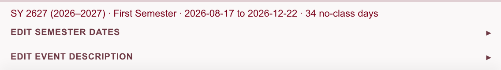
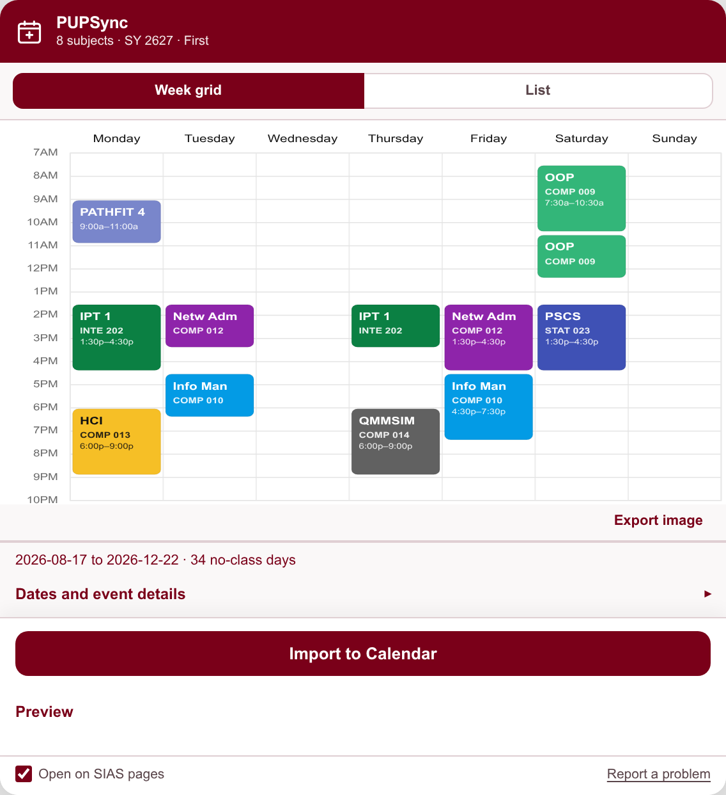
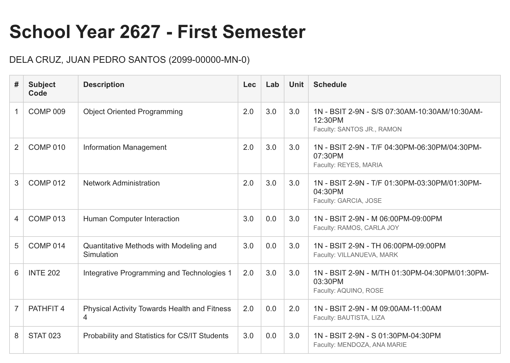
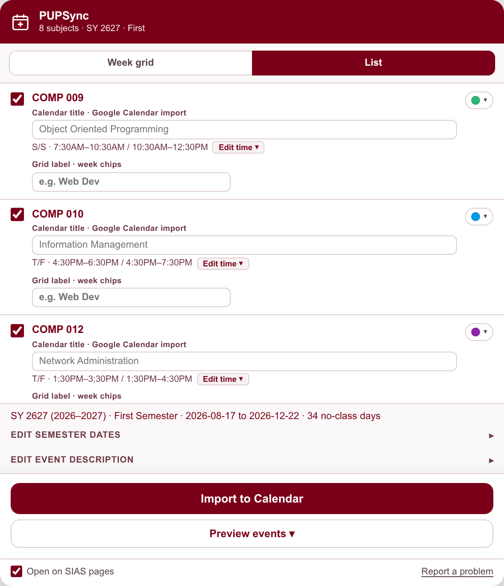
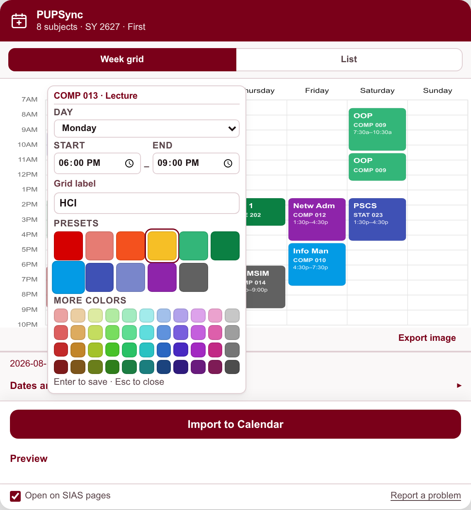
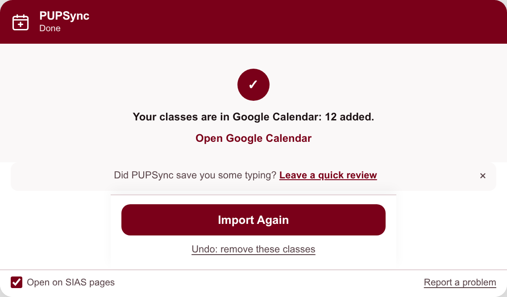
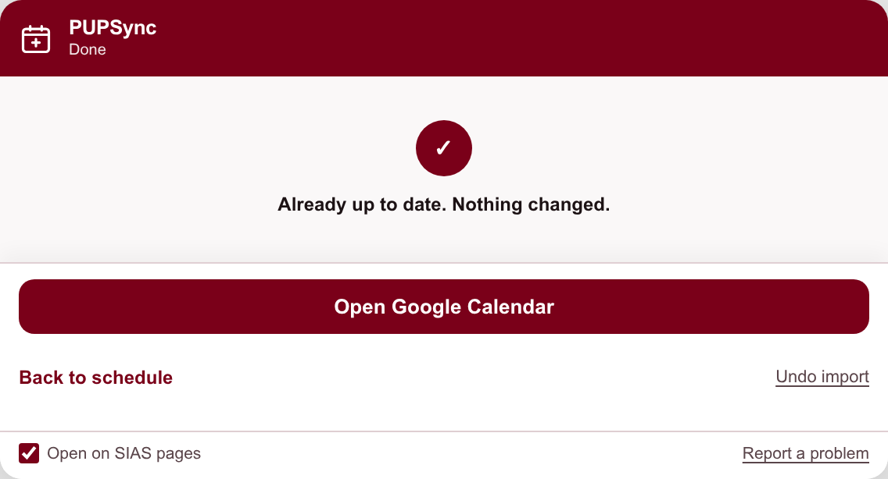
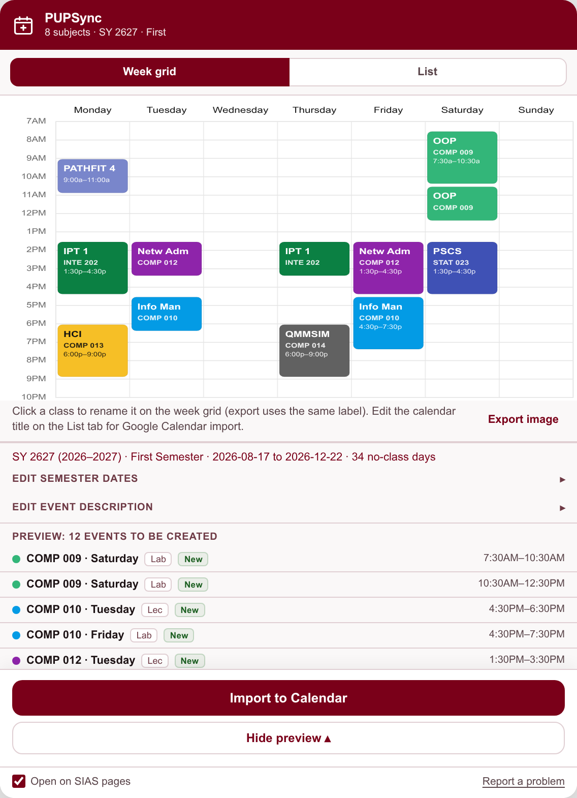
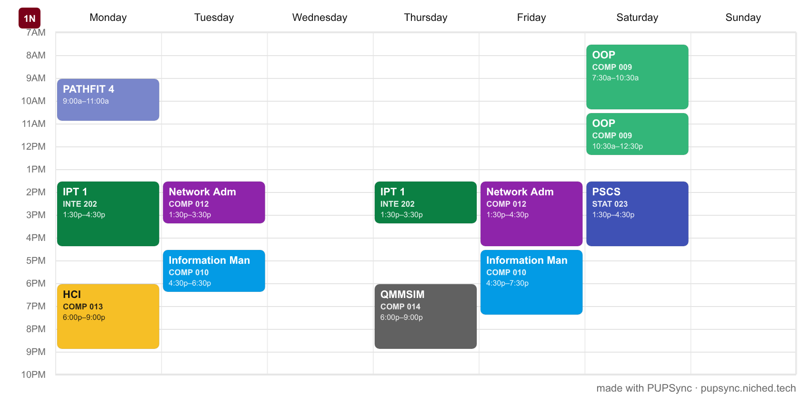
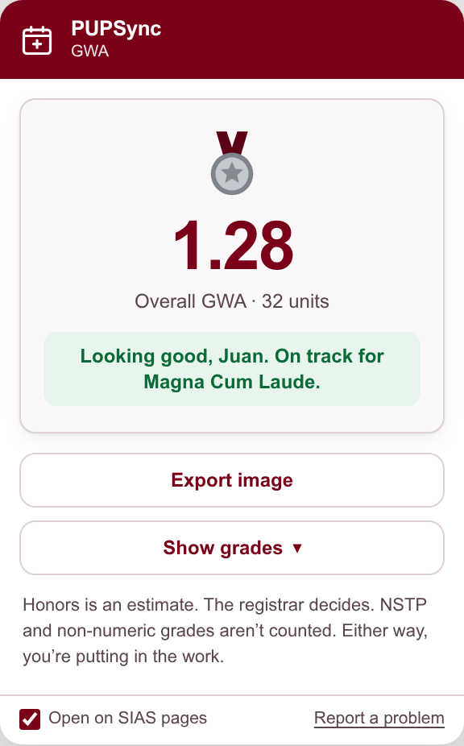

Holidays and exam days skipped
PUPSync knows the term dates and leaves breaks, holidays and exam weeks empty.
PUPSync is a free Chrome extension for PUP students. It reads your SIAS schedule and adds every class to Google Calendar.
Unofficial student project. Not affiliated with PUP.

The same week for Juan Dela Cruz, BSIT 2-9N: what SIAS shows you, and what lands in Google Calendar.

Google Calendar capture goes here
Week of Sep 7 to 13, 2026, same fake schedule

Log in to SIAS as usual and open the Schedule page. PUPSync reads the classes on it.

See the week before anything is added. Rename a class or give it a color.

Sign in with Google once. Every class repeats weekly until the end of the sem.

PUPSync knows the term dates and leaves breaks, holidays and exam weeks empty.

Changed sections or dropped a class? Import again. Your classes get updated, not copied.

Short names like HCI or Netw Adm, and a color per subject, carried into Google Calendar.

Save your week as a picture to send to your block.
Open the Grades page on SIAS and PUPSync shows your overall GWA and whether you're on track for Latin honors.
It's an estimate. Your registrar has the final say. NSTP is not counted.

https://www.googleapis.com/auth/calendar.events*.pup.edu.phwww.googleapis.comFull details are in the privacy policy.
No. PUPSync is a student project. It is not made, endorsed or checked by the Polytechnic University of the Philippines.
It works wherever your schedule is on the SIAS Schedule page at pup.edu.ph. If your classes look wrong in the preview, click Report a problem in the popup so it can be fixed for your campus.
Open your new schedule on SIAS and PUPSync offers to import it. Last sem's classes stay on your calendar as they are.
Open PUPSync and click Remove PUPSync classes. It takes this sem's PUPSync classes off your calendar and leaves everything else alone.
Click Report a problem at the bottom of the popup, or email support@niched.tech.
Need help? Email support@niched.tech. Privacy policy.
PUPSync is an unofficial student project and is not affiliated with the Polytechnic University of the Philippines.